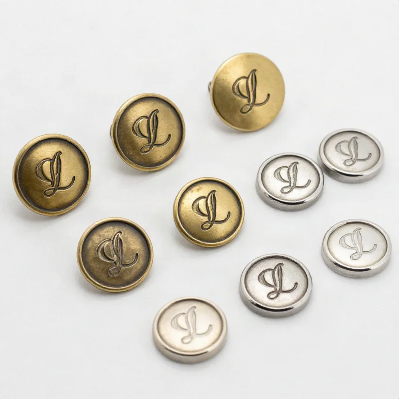
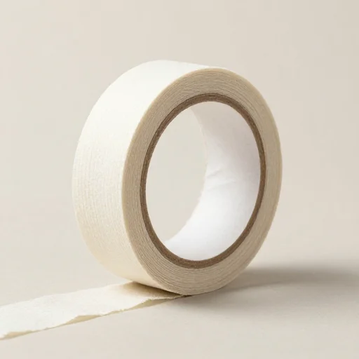
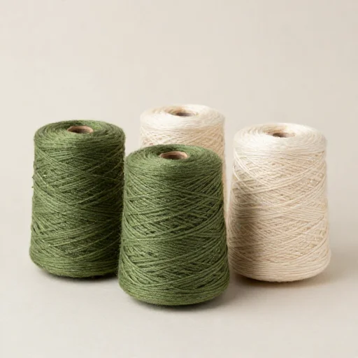
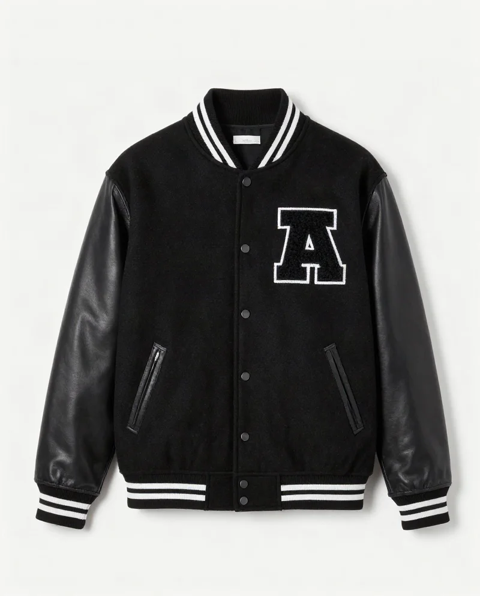

Atelix material directory
Find your next sourcing partner.
Browse materials, components and production services through a clear sourcing hierarchy.

Material family
Fabrics
Start broad, then narrow by fibre, construction or finish. Each material path keeps filters and supplier context close at hand.
Explore fabrics
AccessoriesLabels, tags and garment hardware↗
TrimsZippers, buttons, interlining, lining and tapes↗
Yarns & ThreadsYarn for fabric and garment making↗
OEM ServicesClothing, accessories and socks↗